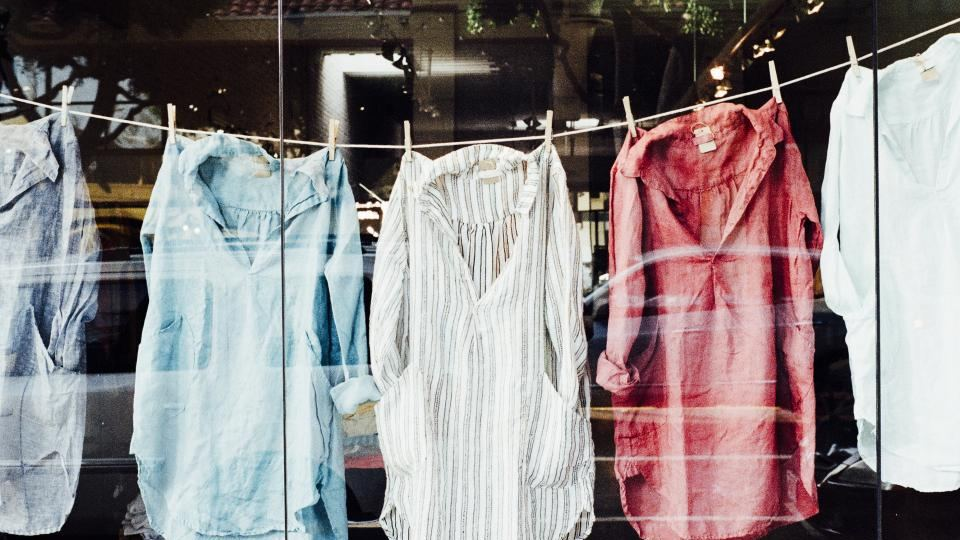
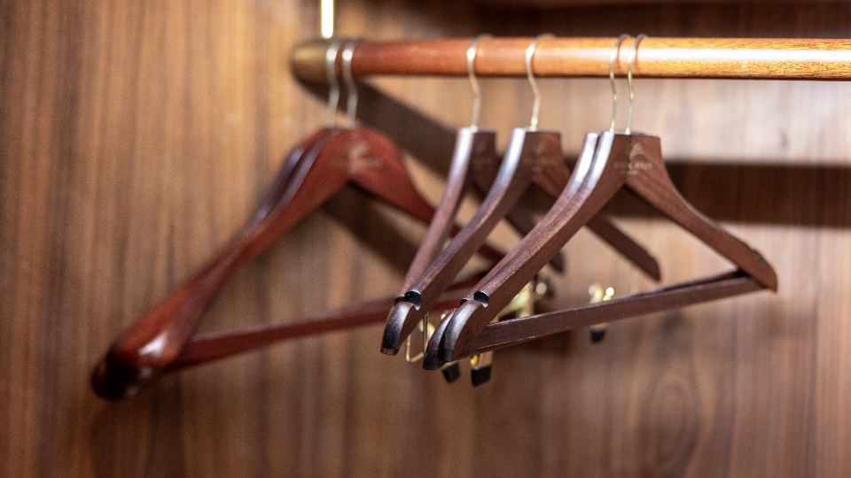

クリーニング店まで衣類を運ぶのは、意外と手間がかかるものです。特に冬物のコートやダウンは、かさばって重く、何着もまとめて持っていくのは大変。そんなときに便利なのが、宅配クリーニングです。自宅で集荷してもらい、きれいになった衣類を受け取るだけで済みます。
この記事では、宅配クリーニングの選び方と、利用前に知っておきたいポイントを分かりやすくまとめました。
宅配クリーニングの便利なところ
- 店舗に行かなくていい：集荷も配達も自宅の玄関で完結します
- 重いものも楽：コートやダウンを何着も運ぶ必要がありません
- 24時間いつでも申し込める：ネットで完結するので、仕事帰りや夜中でもOK
- 保管サービスがある：オフシーズンの衣類を預けられ、クローゼットが片付きます
選び方の4つのポイント

1. 料金の仕組み
宅配クリーニングの料金は、大きく2種類あります。
- 点数パック制：「10点で○○円」のように、まとめて出すほど1点あたりが安くなる
- 単品制：1点ごとに料金が決まっている
家族分をまとめて出すなら点数パック制、数点だけなら単品制が向いています。コートやダウンは単品の料金が高めなので、出す前に対象品目と料金を確認しましょう。
2. 保管サービスの有無と期間
宅配クリーニング最大のメリットが、保管サービスです。クリーニング後、次のシーズンまで最長で約7〜13か月預かってくれます。
冬物を春にまとめて出して、そのまま秋まで保管してもらえば、クローゼットに冬物をしまうスペースが不要になります。収納に悩んでいる家庭には、特におすすめです。
3. 仕上がりの品質とオプション
- シミ抜き：軽いシミは無料、頑固なシミは有料オプションのことが多い
- 撥水加工・防虫加工：大切なコートには、追加で加工をお願いできる
- 検品体制：1点ずつ検品してくれるところは、仕上がりが安定しています
4. 送料と最低利用料金
多くのサービスで「○○円以上で送料無料」の条件があります。少ない点数だと送料がかかって割高になることも。最低利用料金と送料の条件を、申し込み前に確認しましょう。
こんな人に向いています

- 共働きで、クリーニング店に行く時間がない
- 冬物のコートやダウンがかさばって、収納に困っている
- 小さな子どもがいて、外出のついでに店に寄るのが難しい
- 車がなく、重い衣類を運ぶのが大変
利用の流れ
- ネットで申し込む（点数や保管の有無を選ぶ）
- 集荷キットが届く、または宅配業者が引き取りに来る
- 衣類を詰めて渡す
- クリーニング後、指定した日に届く（保管の場合は次シーズンに）
おすすめサービス比較表
| サービス | 料金の目安 | 保管 | 特徴 | 申込み |
|---|---|---|---|---|
| イチオシフラットクリーニング | 1着790円〜 | 保管20点パックあり | 富士山の伏流水で洗う。ダウン・コートOK | 料金を見る |
| 2ポニークリーニング | 公式サイトで確認 | 最大9か月 | 創業60年の老舗。保管付き | 料金を見る |
| 3宅配クリーニングのモクリン | 公式サイトで確認 | 公式サイトで確認 | 品質重視の宅配クリーニング | 料金を見る |
※料金・内容は各社の公式情報・広告素材の記載をもとにした目安です（2026年10月時点）。最新の料金・条件は必ず公式サイトでご確認ください。
よくある質問
どんな衣類でも出せますか？
一般的な衣類は対応していますが、革製品・着物・特殊素材は対象外のことがあります。事前に確認しましょう。
保管中の衣類はどう管理されますか？
温度・湿度を管理した専用の倉庫で保管されるのが一般的です。カビや虫から守られます。
届いた衣類に不満があったら？
多くのサービスで、再仕上げや問い合わせに対応しています。到着後すぐに中身を確認しましょう。
まとめ
この記事のポイント
- 宅配クリーニングは、自宅で預けて受け取るだけの手軽なサービス
- 「料金・保管・品質・送料」の4点で比較する
- 保管サービスを使えば、オフシーズンの収納スペースが空く
- 共働き・子育て世帯・車のない人に特におすすめ
衣替えの手間と収納の悩みを、まとめて解決してくれる宅配クリーニング。まずは手持ちの冬物を、保管付きで出してみるところから始めてみてはいかがでしょうか。